Document control
| Field | Value |
|---|---|
| Title | Technical Dossier, FishyFinds (ISA) |
| Dossier version | 1.0.0 |
| Software | FishyFinds / artifact com.fishyfinds:isa 0.0.1-SNAPSHOT |
| Course | Internet Software Architectures (ISA), FTN UNS, 2021/22 |
| Compiled | 9 September 2026 |
| Authors | Natalija Simin (Guest / Customer), Laslo Uri (Bungalow / Boat owner), David Jandrić (Instructor / Admin) |
| Institution | Faculty of Technical Sciences, University of Novi Sad, Computing and Control Engineering |
| Live check | scripts/full-smoke.ps1 66/66 PASS; Maven service tests green (JDK 17) |
| Local entry | http://localhost:8080 |
1. Purpose of the subject
Internet Software Architectures (ISA) is the FTN course where a three-student team designs and ships a multi-role web system with a real persistence layer, authentication, and graded non-functional topics (concurrency, DevOps, scalability). The exam expects:
- a shared product with role-split ownership (each student defends a persona),
- REST + SPA (or equivalent) over a relational database,
- documented concurrent-access behaviour,
- automated tests and CI,
- a short scalability argument with at least one concrete mechanism in code.
This dossier is the archive write-up for that defense: what the system is for, how it is built, what each grade band covers, and what the live UI looked like when verified in September 2026.
2. Purpose of the project
FishyFinds is a fishing-tourism marketplace. Guests browse coastal bungalows, boats, and instructor-led courses. Registered customers reserve and cancel slots. Advertisers (bungalow owners, boat owners, instructors) publish offers, manage availability, run discount “quick actions,” book for walk-in clients, and read occupancy / income charts. Administrators moderate registrations, reviews, complaints, account deletions, no-show penalties, the loyalty ladder, the user/offer directory, and the platform income cut.
The product is intentionally one Spring Boot process serving a Vue 2 SPA from static/, backed by PostgreSQL. It is a course system, not a hosted production SaaS: SMTP may be unset, passwords are demo-level, and schema is recreated from seed on boot (create-drop + data-postgres.sql).
3. Identification
| Item | Detail |
|---|---|
| Display name | FISHYFINDS (red fish mark, black wordmark) |
| English product name | FishyFinds — coastal stays & fishing days |
| Serbian product name | FishyFinds — obalski smeštaj i ribolovni dani |
| Kind | Multi-role web application (SPA + REST) |
| Backend | Java 11 target, Spring Boot 2.5.7, runs on JDK 17+ |
| Frontend | Vue 2 (CDN), Vue Router history mode, Axios, SweetAlert2 |
| Maps / charts | OpenLayers 6, Chart.js |
| Persistence | Spring Data JPA, Hibernate, PostgreSQL database fishyfinds_db |
| Auth | Spring Security + JWT (TokenUtils), roles via @PreAuthorize |
| Spring Mail (verification, booking, admin decisions; failures non-fatal) | |
| Build | Maven Wrapper; GitHub Actions; SonarCloud |
| Tests | JUnit 5 + Mockito; PowerShell live smoke (scripts/full-smoke.ps1) |
| UI language | English chrome (course SPA) |
| Doc languages | English (this file) · Serbian Latin (DOSSIER_SR.md) |
| Author | Course roles | Main surfaces |
|---|---|---|
| Natalija Simin | Guest, Customer | Catalogs, register/activate, search & book, cancel (≥3 days), history, feedback, follow, complaints, penalties, profile |
| Laslo Uri | Bungalow owner, Boat owner | Offer CRUD, terms, quick actions, book-for-client, maps, unavailability calendar, /owner-reports |
| David Jandrić | Instructor, Admin | Courses, visit reports, loyalty, admin queues (registrations, reviews, complaints, deletions, penalties, directory, income) |
Seed password for all demo accounts: password.
| Role | |
|---|---|
mail@mail.com |
Customer |
zokaMagic@mail.com |
Bungalow owner |
zokiSumi@mail.com |
Boat owner |
vesnaVuki@mail.com |
Instructor |
admin@admin.com |
Admin |
pending.owner@mail.com |
Pending registration |
4. Scope
In scope: browsing three offer types; JWT login; customer booking/cancel; owner/instructor offer lifecycle (create, edit blocked while reserved, soft-delete, terms, quick actions, book-for-client); OpenLayers maps; occupancy / unavailability calendar; Chart.js reports; loyalty configuration; full admin moderation hub; concurrent-access write-ups; service tests; catalog caching for the scalability PoC.
Out of scope / honest limits: production SMTP hardening, multi-tenant hosting, pixel-perfect capture of every nested admin modal, and a full human click-through of every SweetAlert path. Live smoke covers 66 API/UI-critical checks across roles; that is the verification bar used for this dossier.
5. Technology stack (explained)
| Layer | Choice | Why it is here |
|---|---|---|
| Spring Boot 2.5.7 | Application container | Course-era stack: embedded Tomcat, auto-config for Web, Security, JPA, Mail |
| Spring Web / Data REST | HTTP surface | Controllers under controllers/ expose /api/**; SPA is static |
| Spring Security + JWT | AuthN/Z | Stateless API: login returns token; filter parses Authorization; method security by role |
| Spring Data JPA / Hibernate | ORM | Maps User hierarchy and Offer subtypes to PostgreSQL; @Version for optimistic locking |
| PostgreSQL | RDBMS | Relational integrity for reservations overlapping terms; seed via data-postgres.sql |
| Spring Mail | Notifications | Activation, booking, subscriber quick-action mail; wrapped so missing SMTP does not fail bookings |
| Vue 2 CDN SPA | UI | Fast course delivery without a Node build pipeline; components in static/ |
| Vue Router (history) | Client routes | Pretty URLs; SpaForwardController forwards unknown GETs to index.html |
| Axios | HTTP client | Attaches JWT; talks to /api |
| OpenLayers 6 | Maps (grade 7) | Offer detail maps from Location coordinates |
| Chart.js | Analytics (grade 7) | Owner occupancy / income charts; admin finance views |
Spring Cache @Cacheable |
Scalability PoC (grade 10) | Catalog findAll for bungalows / boats / courses |
| Maven + GHA + Sonar | DevOps (grade 9) | Build, test, static analysis |
Source layout
src/main/java/com/fishyfinds/isa/
controllers/ REST (offers, users, terms, admin, analytics…)
service/ Business rules (reservation, mail, loyalty…)
model/ JPA entities + enums
repository/ Spring Data interfaces
security/ JWT filter, TokenUtils
config/ Security, cache, SPA forward
src/main/resources/static/ Vue SPA (kebab-case pages)
src/main/resources/data-postgres.sql
docs/concurrent-access/ Grade 8 PDFs + MD
docs/scalability/SCALABILITY_POC.md Grade 10 write-up
scripts/full-smoke.ps1 Live verification
6. System architecture

localStorage and the Authorization header. Catalog reads may hit Spring Cache.

Runtime is a single JVM. There is no separate Node server. Static assets and REST share origin localhost:8080, which simplifies CORS for the course demo.
7. Domain model (application detail)
Users. User implements UserDetails. Subtypes: Customer, BungalowOwner, BoatOwner, Instructor, Admin, plus Authority / registration status. Owners and instructors register as advertisers and wait for admin approval; customers activate via mail token when SMTP is configured.
Offers. Abstract Offer with Location, ImageItem, AdditionalService, Price. Concrete types: Bungalow, Boat (with Engine), Course (instructor link). Soft-delete and “no edit while active reservations” protect booked inventory.
Scheduling. Term is a bookable window on an offer (@Version). Reservation binds a customer (or null for ReservationType.QUICK) to a term. CancelledReservation records cancels. OfferUnavailability blocks calendar ranges so bookings cannot overlap closed periods (grade 7).
Moderation & loyalty. Complaint, UserFeedback, AccountDeletionRequest, Penal, LoyaltyProgram, per-role loyalty rows (CustomerLoyalty, OwnerLoyalty, InstructorLoyalty), VisitReport, Subscriber (follow offer → mail on quick action).
Key rules coded in services
- Cancel only if the reservation starts in ≥ 3 days.
createQuickActioncreates a quick reservation and emails subscribers (MailService.sendNewActionEmail).updateBungalow|Boat|Course/{id}refused when active reservations exist.- Terms returned by
getTermsByOfferIdonly ifendTimeis still after “now” (seed windows pushed to 2027 so the 2026 archive run stays bookable). - Missing customer
Penalrow is auto-created on booking so penalty flows never NPE. - Duplicate
DELETE /api/deleteUser/{id}mapping was removed; directory delete stays onAdminDirectoryController.
8. Functional specification by role
Guest. Landing hero; browse bungalows / boats / courses; open details (description, price, rating, map); register; sign in.
Customer. Search/sort catalogs; reserve a free term; see upcoming / history; cancel with the 3-day rule; leave feedback; follow offers for actions; file complaints; view penalties; edit profile.
Bungalow / boat owner. My listings with Details / Terms / Edit / Actions / Book for client / Delete; add terms via daterange UI; publish quick actions; mark unavailability on calendar; open /owner-reports charts; visit report entry points where applicable.
Instructor. Same offer-management parity on courses (/my-courses): terms, actions, book-for-client, calendar, reports.
Admin. Dashboard tiles: registrations, complaints, reviews, deletion requests, penalties, directory, register admin, loyalty, income / system cut. Each tile opens a moderation queue with accept/deny style decisions and optional mail.
9. Grade ladder (ISA 6 → 10)
| Grade | Expectation | What is in this tree |
|---|---|---|
| 6 | Core §3 marketplace | Terms UI for all offer types; POST /api/createQuickAction + subscriber mail; PUT update endpoints; book-for-client; soft-delete |
| 7 | Maps, charts, calendar, loyalty | OpenLayers on details; Chart.js reports; OfferUnavailability; /admin-loyalty |
| 8 | Concurrent access | PDFs under docs/concurrent-access/ (Students 1–3); @Version + locks in services |
| 9 | DevOps + tests | GitHub Actions, SonarCloud; Mockito tests for reservation create/cancel, quick action, loyalty CRUD, penal approve |
| 10 | Scalability | docs/scalability/SCALABILITY_POC.md; @Cacheable on catalog findAll |
10. User interface (live captures)
Screens captured from the local app on 9 September 2026 against seeded data. Images live in ../screenshots/.
10.1 Guest and customer
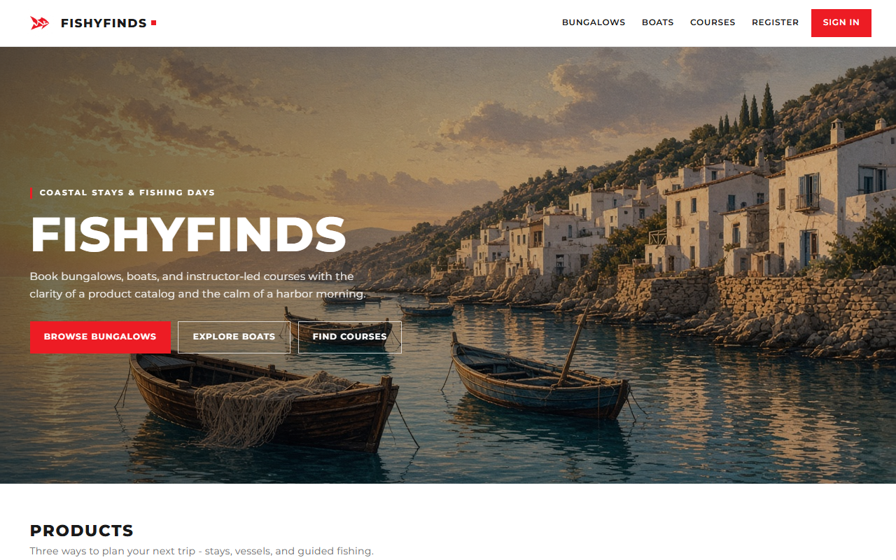
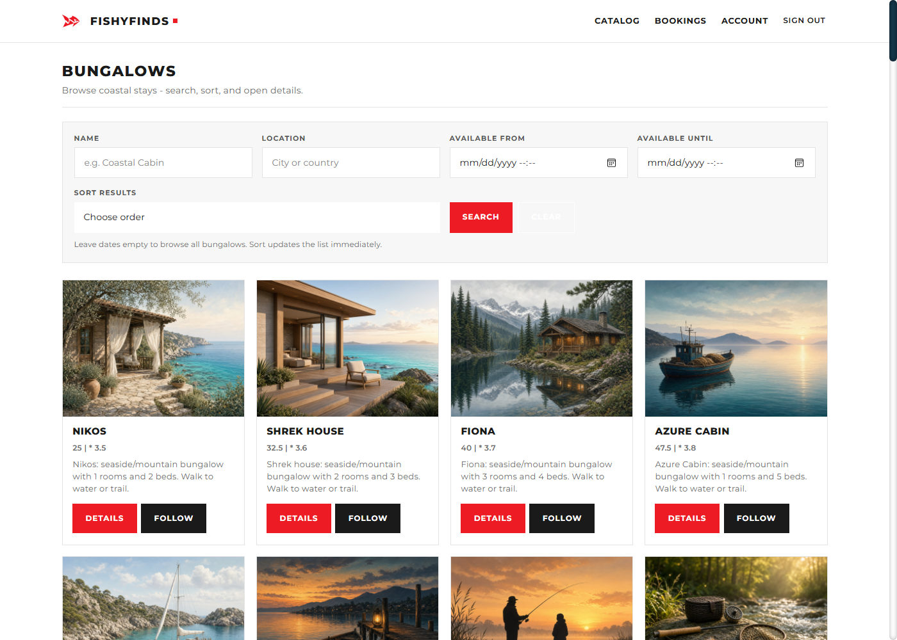
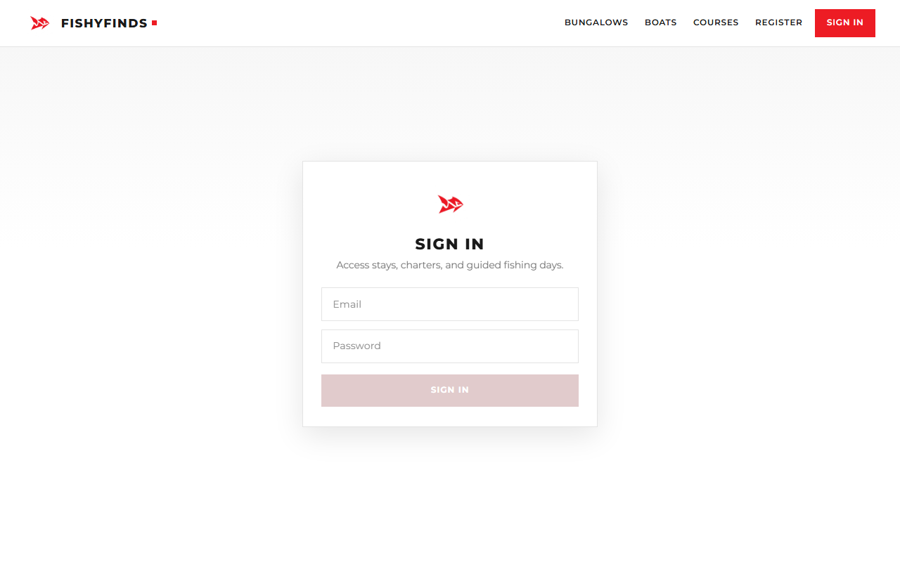
/api authentication; demo accounts use password password.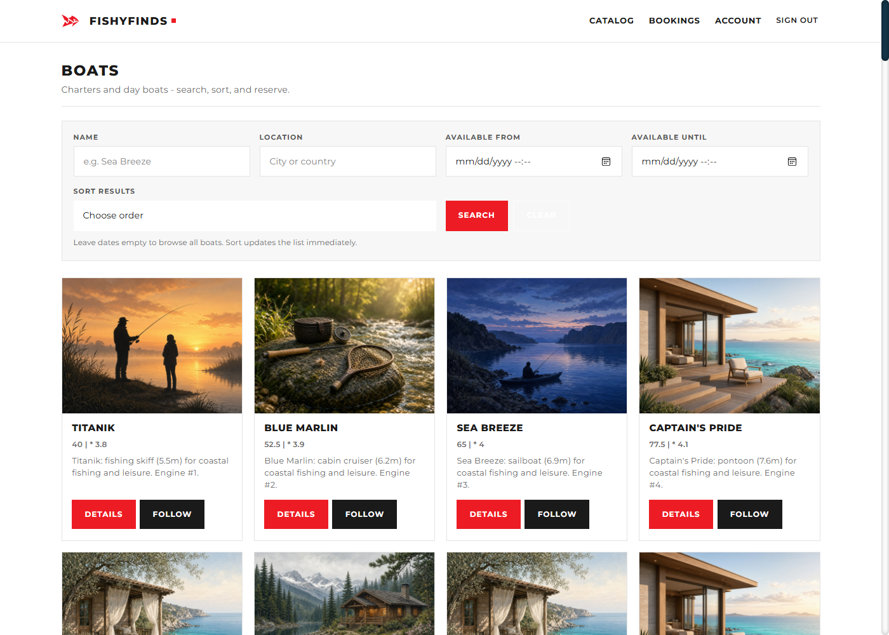
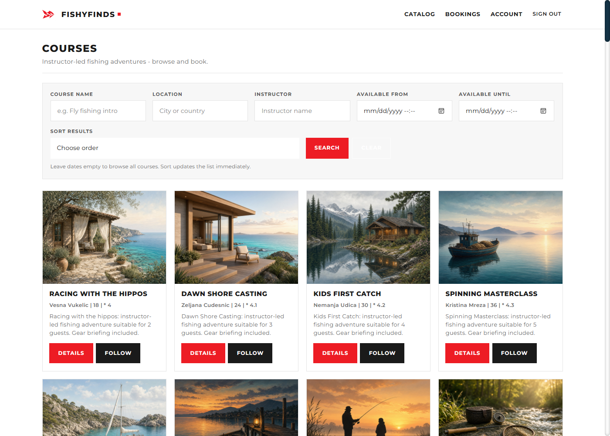
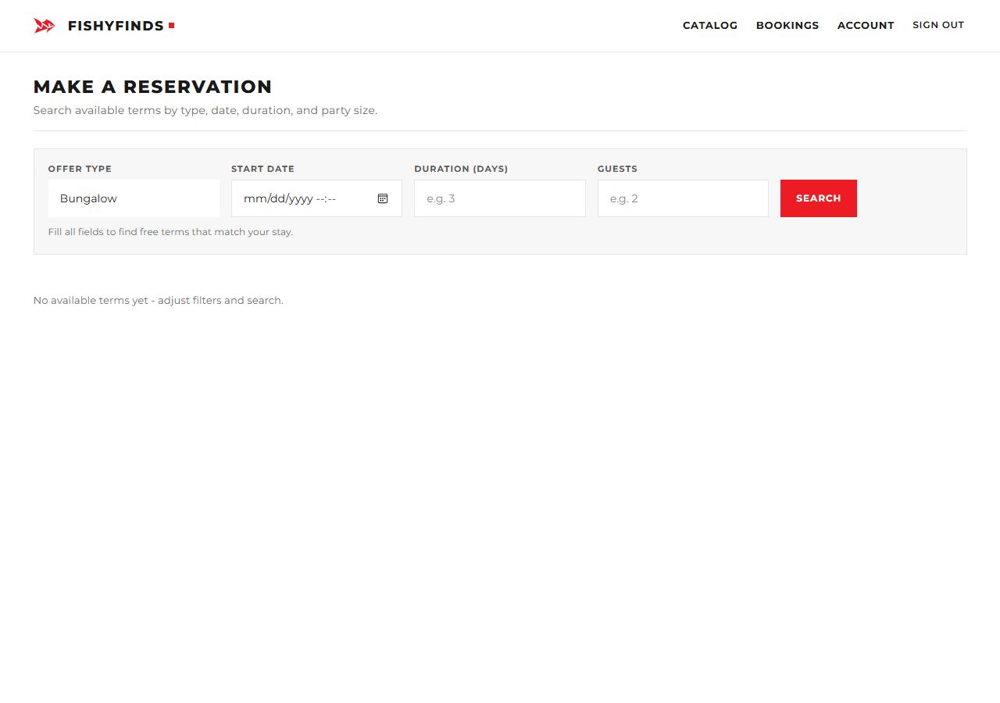
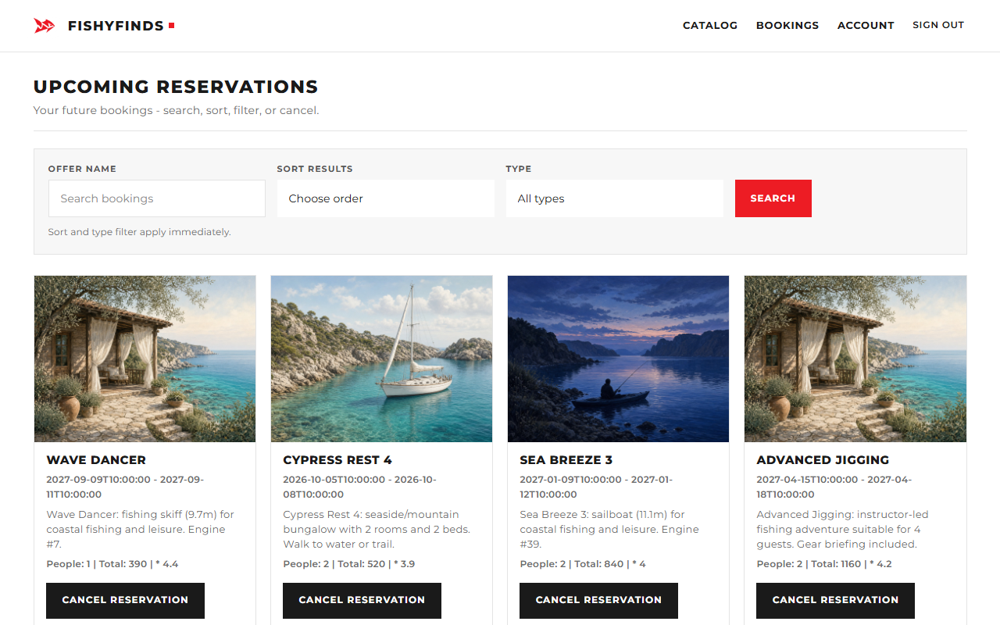
10.2 Owners and instructor
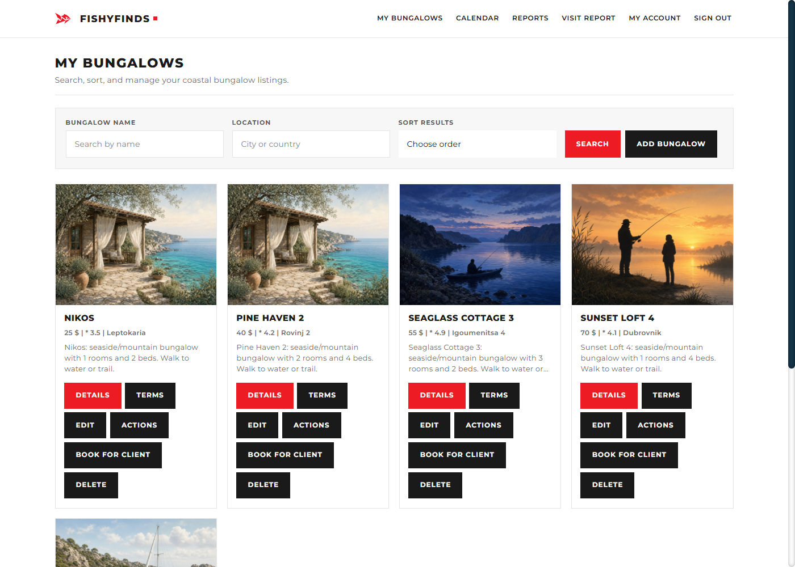
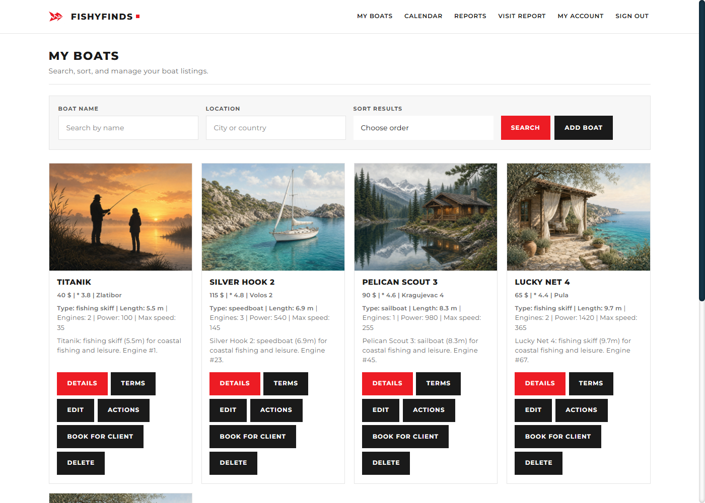
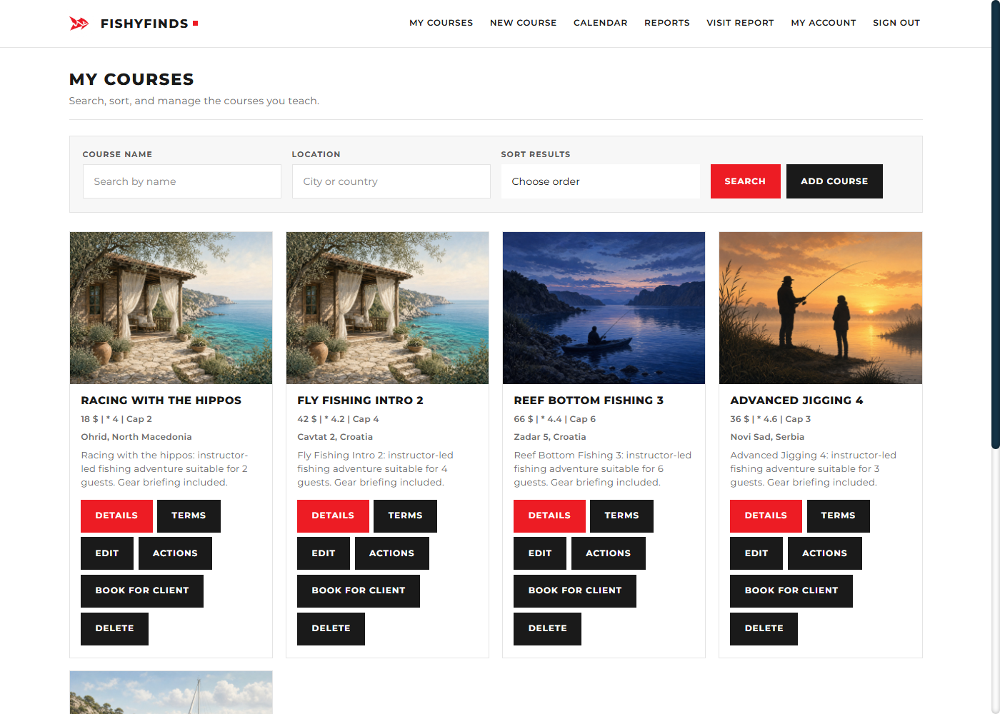
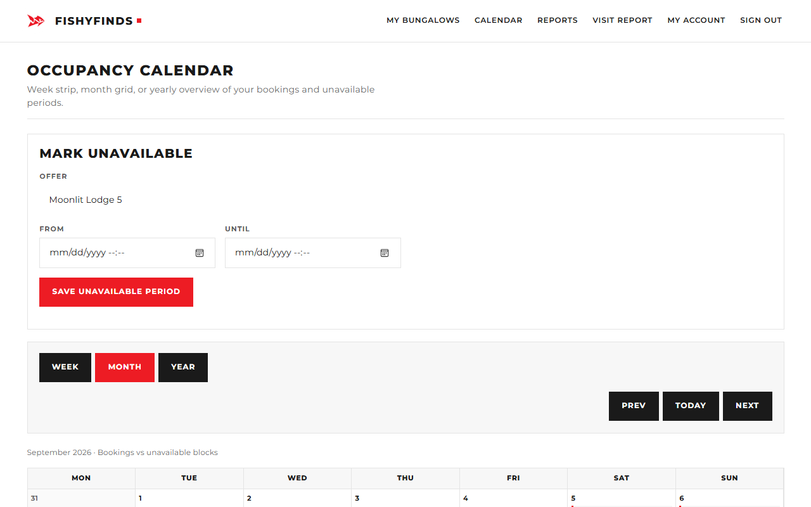
OfferUnavailability blocks so closed ranges cannot be booked.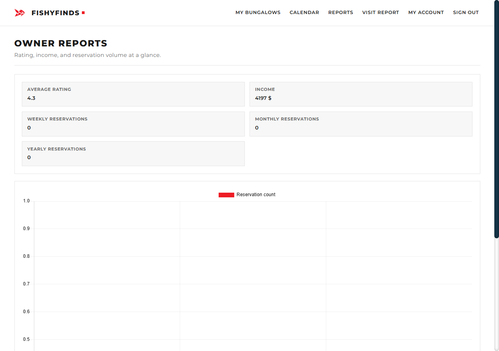
10.3 Admin
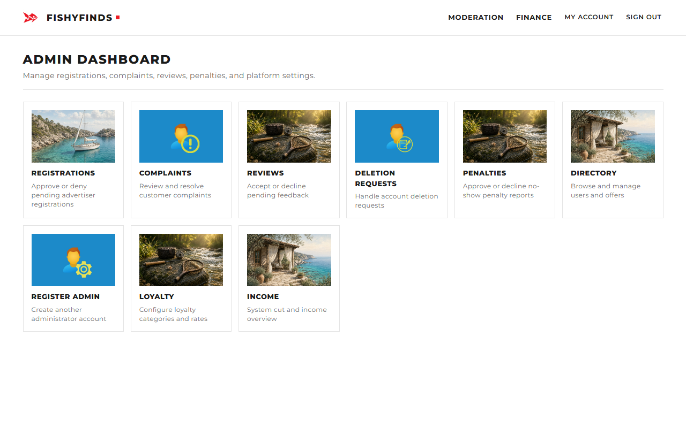
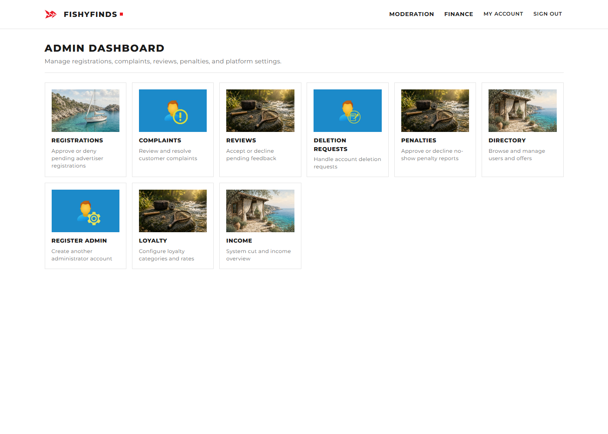
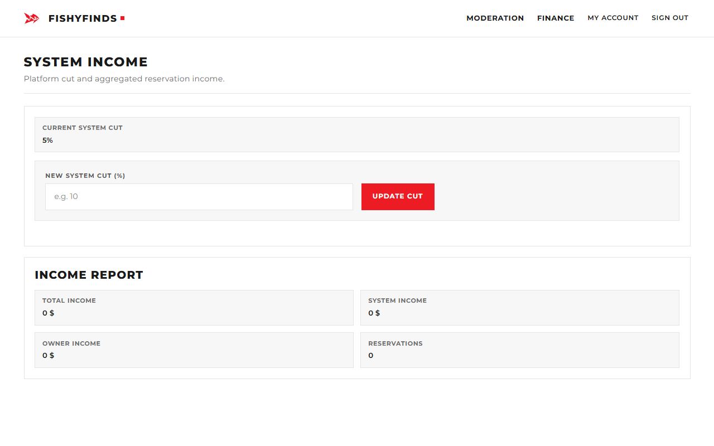
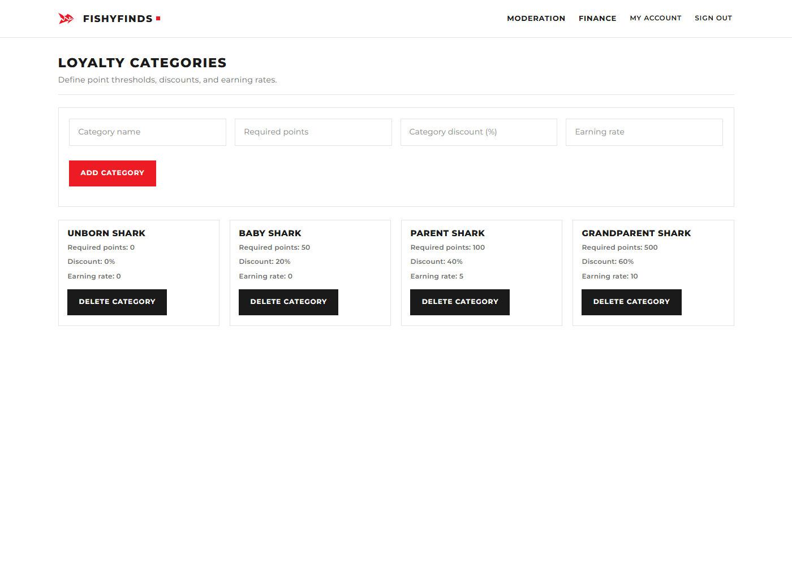
11. Security, mail, and data
- Passwords stored with Spring Security hashing; API authorization is JWT + role checks.
- Registration for advertisers stays
PENDINGuntil admin approval. - Mail is best-effort: booking and quick-action success paths do not depend on a working SMTP server (important for offline demos).
- Schema strategy for demos: Hibernate
create-dropreloadsdata-postgres.sqleach boot. Term dates in seed use 2027 windows. Sequencesetvalcalls keeployalty_program/penalinserts from colliding with identity columns.
12. Concurrency, tests, and scalability
Concurrency (grade 8). Optimistic @Version on Term and Reservation; pessimistic locking on customer lookup where double-booking races matter. Narrative + diagrams: docs/concurrent-access/ (Student 1 client, Student 2 owners, Student 3 admin/instructor).
Tests (grade 9). Service-level Mockito coverage for reservation create/cancel, quick action, loyalty CRUD, and penal approval. ./mvnw test on JDK 17 is green. Live regression: scripts/full-smoke.ps1 (66 checks).
Scalability (grade 10). Written PoC discusses partitioning, read replicas, load balancing, and caching. In code, catalog findAll endpoints are @Cacheable so repeated guest traffic does not always hit PostgreSQL.
13. Build and run (2026 check)
# PostgreSQL: database fishyfinds_db (defaults user/password root/root;
# override with DB_USERNAME / DB_PASSWORD — do not commit secrets)
./mvnw spring-boot:run
# open http://localhost:8080
./mvnw test
powershell -File scripts/full-smoke.ps1
powershell -File scripts/capture-screenshots.ps1
JDK 17+ recommended even though pom.xml declares Java 11. App serves SPA and API on port 8080.
14. Summary
FishyFinds is the ISA 2021/22 team archive: a Spring Boot + Vue 2 + PostgreSQL marketplace for bungalows, boats, and fishing courses, with a clear three-student role split, JWT security, admin moderation, maps/charts/calendar/loyalty, concurrent-access documentation, automated tests/CI, and a caching-backed scalability note. Verified locally on 9 September 2026 with 66/66 smoke checks and green Maven tests. This dossier pairs English and Serbian Latin editions for the oral defense and for later rebuilds of the archive.
15. Related documents
| Document | Path |
|---|---|
| Serbian dossier | DOSSIER_SR.md |
| Interactive HTML | dossier.html |
| Concurrent access | ../concurrent-access/ |
| Scalability PoC | ../scalability/SCALABILITY_POC.md |
| Screenshots | ../screenshots/ |
| Diagrams | ../assets/diagrams/ |
FishyFinds ISA technical dossier — English edition.
Kontrola dokumenta
| Polje | Vrednost |
|---|---|
| Naslov | Tehnički dosije, FishyFinds (ISA) |
| Verzija dosijea | 1.0.0 |
| Softver | FishyFinds / artefakt com.fishyfinds:isa 0.0.1-SNAPSHOT |
| Predmet | Internet softverske arhitekture (ISA), FTN UNS, 2021/22 |
| Sastavljeno | 9. septembra 2026. |
| Autori | Natalija Simin (gost / klijent), Laslo Uri (vlasnik bungalova / broda), David Jandrić (instruktor / admin) |
| Institucija | Fakultet tehničkih nauka, Univerzitet u Novom Sadu, Računarstvo i automatika |
| Provera | scripts/full-smoke.ps1 66/66 PASS; Maven servisni testovi zeleni (JDK 17) |
| Lokalni ulaz | http://localhost:8080 |
1. Cilj predmeta
Internet softverske arhitekture (ISA) je predmet na FTN-u gde tim od tri studenta projektuje i isporučuje višekorisnički veb sistem sa pravom perzistencijom, autentifikacijom i ocenjivanim nefunkcionalnim temama (konkurentnost, DevOps, skalabilnost). Za odbranu se očekuje:
- zajednički proizvod sa podelom uloga (svaki student brani svoju personu),
- REST + SPA (ili ekvivalent) nad relacionom bazom,
- dokumentovano ponašanje pri konkurentnom pristupu,
- automatski testovi i CI,
- kratka argumentacija skalabilnosti uz bar jedan konkretan mehanizam u kodu.
Ovaj dosije je arhivski zapis te odbrane: čemu sistem služi, kako je složen, šta pokriva svaki opseg ocena i kako je izgledao živi UI u septembru 2026.
2. Cilj projekta
FishyFinds je marketplace za ribolovni turizam. Gosti pregledaju obalske bungalove, brodove i kurseve sa instruktorom. Registrovani klijenti rezervišu i otkazuju termine. Oglašivači (vlasnici bungalova, vlasnici brodova, instruktori) objavljuju ponude, uređuju dostupnost, pokreću popustne „brze akcije“, rezervišu za klijenta na licu mesta i čitaju grafikone zauzetosti / prihoda. Administratori moderiraju registracije, recenzije, žalbe, zahteve za brisanje naloga, penale zbog nedolaska, loyalty lestvicu, direktorijum korisnika/ponuda i sistemski udeo prihoda.
Proizvod je namerno jedan Spring Boot proces koji služi Vue 2 SPA iz static/, uz PostgreSQL. To je kursni sistem, ne produkcioni SaaS: SMTP može biti isključen, lozinke su demo, šema se na svakom startu gradi iz seed-a (create-drop + data-postgres.sql).
3. Identifikacija
| Stavka | Detalj |
|---|---|
| Prikazni naziv | FISHYFINDS (crveni znak ribe, crni wordmark) |
| Engleski naziv | FishyFinds — coastal stays & fishing days |
| Srpski naziv | FishyFinds — obalski smeštaj i ribolovni dani |
| Vrsta | Višekorisnička veb aplikacija (SPA + REST) |
| Backend | Java 11 target, Spring Boot 2.5.7, radi na JDK 17+ |
| Frontend | Vue 2 (CDN), Vue Router history, Axios, SweetAlert2 |
| Mape / grafikoni | OpenLayers 6, Chart.js |
| Persistencija | Spring Data JPA, Hibernate, PostgreSQL baza fishyfinds_db |
| Auth | Spring Security + JWT (TokenUtils), uloge preko @PreAuthorize |
| Mejl | Spring Mail (verifikacija, rezervacije, admin odluke; greške nisu fatalne) |
| Build | Maven Wrapper; GitHub Actions; SonarCloud |
| Testovi | JUnit 5 + Mockito; PowerShell živi smoke (scripts/full-smoke.ps1) |
| Jezik UI | Engleski chrome (kursni SPA) |
| Jezici dokumentacije | Srpski latinica (ovaj fajl) · English (DOSSIER_EN.md) |
| Autor | Uloge na predmetu | Glavne površine |
|---|---|---|
| Natalija Simin | Gost, klijent | Katalozi, registracija/aktivacija, pretraga i rezervacija, otkazivanje (≥3 dana), istorija, feedback, praćenje, žalbe, penali, profil |
| Laslo Uri | Vlasnik bungalova, vlasnik broda | CRUD ponuda, termini, brze akcije, rezervacija za klijenta, mape, kalendar nedostupnosti, /owner-reports |
| David Jandrić | Instruktor, admin | Kursevi, izveštaji o posetama, loyalty, admin redovi (registracije, recenzije, žalbe, brisanja, penali, direktorijum, prihod) |
Seed lozinka za sve demo naloge: password.
| Uloga | |
|---|---|
mail@mail.com |
Klijent |
zokaMagic@mail.com |
Vlasnik bungalova |
zokiSumi@mail.com |
Vlasnik broda |
vesnaVuki@mail.com |
Instruktor |
admin@admin.com |
Admin |
pending.owner@mail.com |
Registracija na čekanju |
4. Obuhvat
U obuhvatu: pregled tri tipa ponuda; JWT prijava; rezervacija/otkazivanje klijenta; životni ciklus ponude vlasnika/instruktora (kreiranje, izmena blokirana dok ima rezervacija, meko brisanje, termini, brze akcije, rezervacija za klijenta); OpenLayers mape; kalendar zauzetosti / nedostupnosti; Chart.js izveštaji; loyalty; kompletan admin hub; dokumenti konkurentnog pristupa; servisni testovi; keš kataloga za PoC skalabilnosti.
Van obuhvata / poštene granice: produkciono ojačavanje SMTP-a, multi-tenant hosting, savršeno snimanje svakog ugnježđenog admin modala i potpuni ručni prolaz kroz svaki SweetAlert. Živi smoke pokriva 66 API/UI kritičnih provera po ulogama — to je prag verifikacije za ovaj dosije.
5. Tehnološki stek (sa objašnjenjem)
| Sloj | Izbor | Zašto je ovde |
|---|---|---|
| Spring Boot 2.5.7 | Kontejner aplikacije | Stek iz vremena predmeta: ugrađeni Tomcat, auto-config za Web, Security, JPA, Mail |
| Spring Web / Data REST | HTTP površina | Kontroleri u controllers/ izlažu /api/**; SPA je statički |
| Spring Security + JWT | AuthN/Z | Bezstanјski API: login vraća token; filter čita Authorization; method security po ulozi |
| Spring Data JPA / Hibernate | ORM | Mapira hijerarhiju User i podtipove Offer na PostgreSQL; @Version za optimističko zaključavanje |
| PostgreSQL | RDBMS | Relacioni integritet rezervacija nad terminima; seed preko data-postgres.sql |
| Spring Mail | Obaveštenja | Aktivacija, rezervacija, mejl pretplatnicima; umotan tako da nestali SMTP ne ruši rezervaciju |
| Vue 2 CDN SPA | UI | Brza isporuka bez Node build pipeline-a; komponente u static/ |
| Vue Router (history) | Klijentske rute | Lepši URL-ovi; SpaForwardController prosleđuje nepoznate GET-ove na index.html |
| Axios | HTTP klijent | Kači JWT; govori sa /api |
| OpenLayers 6 | Mape (ocena 7) | Mape na detalju ponude iz koordinata Location |
| Chart.js | Analitika (ocena 7) | Grafikoni vlasnika; admin finansije |
Spring Cache @Cacheable |
PoC skalabilnosti (ocena 10) | Catalog findAll za bungalove / brodove / kurseve |
| Maven + GHA + Sonar | DevOps (ocena 9) | Build, test, statička analiza |
Raspored izvornog koda
src/main/java/com/fishyfinds/isa/
controllers/ REST (ponude, korisnici, termini, admin, analitika…)
service/ Poslovna pravila (rezervacija, mejl, loyalty…)
model/ JPA entiteti + enumi
repository/ Spring Data interfejsi
security/ JWT filter, TokenUtils
config/ Security, keš, SPA forward
src/main/resources/static/ Vue SPA
src/main/resources/data-postgres.sql
docs/concurrent-access/ Ocena 8
docs/scalability/SCALABILITY_POC.md Ocena 10
scripts/full-smoke.ps1 Živa verifikacija
6. Arhitektura sistema
localStorage i zaglavlju Authorization. Čitanja kataloga mogu ići preko Spring Cache.U runtime-u je jedan JVM. Nema posebnog Node servera. Statički sadržaj i REST dele origin localhost:8080, što pojednostavljuje CORS za kursni demo.
7. Domenski model (detalj aplikacije)
Korisnici. User implementira UserDetails. Podtipovi: Customer, BungalowOwner, BoatOwner, Instructor, Admin, uz Authority / status registracije. Oglašivači čekaju admin odobrenje; klijenti se aktiviraju mejl tokenom kada SMTP radi.
Ponude. Apstraktni Offer sa Location, ImageItem, AdditionalService, Price. Konkretni tipovi: Bungalow, Boat (sa Engine), Course (veza na instruktora). Meko brisanje i zabrana izmene dok postoje aktivne rezervacije štite inventar.
Zakazivanje. Term je rezervabilni prozor na ponudi (@Version). Reservation vezuje klijenta (ili null za ReservationType.QUICK) za termin. CancelledReservation beleži otkazivanja. OfferUnavailability blokira opsege na kalendaru (ocena 7).
Moderacija i loyalty. Complaint, UserFeedback, AccountDeletionRequest, Penal, LoyaltyProgram, loyalty redovi po ulozi, VisitReport, Subscriber (praćenje → mejl na brzu akciju).
Ključna pravila u servisima
- Otkazivanje samo ako rezervacija počinje za ≥ 3 dana.
createQuickActionpravi brzu rezervaciju i šalje mejl pretplatnicima.updateBungalow|Boat|Course/{id}odbijen dok postoje aktivne rezervacije.getTermsByOfferIdvraća termine čiji jeendTimejoš u budućnosti (seed prozori pomereni na 2027).- Nedostajući
Penalred za klijenta se automatski kreira. - Duplikat
DELETE /api/deleteUser/{id}uklonjen; brisanje ostaje naAdminDirectoryController.
8. Funkcionalna specifikacija po ulozi
Gost. Hero početna; pregled bungalova / brodova / kurseva; detalj (opis, cena, ocena, mapa); registracija; prijava.
Klijent. Pretraga/sortiranje; rezervacija slobodnog termina; predstojeće / istorija; otkazivanje uz pravilo 3 dana; feedback; praćenje akcija; žalbe; penali; profil.
Vlasnik bungalova / broda. Moje liste sa Details / Terms / Edit / Actions / Book for client / Delete; dodavanje termina; brze akcije; nedostupnost na kalendaru; /owner-reports; visit report gde postoji.
Instruktor. Isti obrazac na kursevima (/my-courses).
Admin. Tile dashboard: registracije, žalbe, recenzije, brisanja, penali, direktorijum, registracija admina, loyalty, prihod / sistemski udeo.
9. Lestvica ocena (ISA 6 → 10)
| Ocena | Očekivanje | Šta je u ovom stablu |
|---|---|---|
| 6 | Jezgro marketplace-a | Terms UI za sve tipove; POST /api/createQuickAction + mejl; PUT update; book-for-client; soft-delete |
| 7 | Mape, grafikoni, kalendar, loyalty | OpenLayers; Chart.js; OfferUnavailability; /admin-loyalty |
| 8 | Konkurentni pristup | PDF-ovi u docs/concurrent-access/; @Version + lock-ovi |
| 9 | DevOps + testovi | GitHub Actions, SonarCloud; Mockito testovi |
| 10 | Skalabilnost | SCALABILITY_POC.md; @Cacheable na catalog findAll |
10. Korisnički interfejs (živi snimci)
Snimci sa lokalne aplikacije 9. septembra 2026. Fajlovi: ../screenshots/.
10.1 Gost i klijent
password.10.2 Vlasnici i instruktor
OfferUnavailability.10.3 Admin
11. Bezbednost, mejl i podaci
- Lozinke sa heširanjem Spring Security; autorizacija JWT + provera uloga.
- Registracija oglašivača ostaje
PENDINGdo admin odobrenja. - Mejl je best-effort: uspeh rezervacije ne zavisi od SMTP-a.
- Demo šema:
create-drop+data-postgres.sql. Termini u seed-u su u 2027.setvalna sekvencama sprečava sudar PK za loyalty/penal.
12. Konkurentnost, testovi i skalabilnost
Konkurentnost (ocena 8). Optimistički @Version na Term / Reservation; pesimistički lock na klijenta gde treba. Opisi: docs/concurrent-access/.
Testovi (ocena 9). Mockito pokriće servisa; ./mvnw test na JDK 17 zelen. Živa regresija: scripts/full-smoke.ps1 (66 provera).
Skalabilnost (ocena 10). Pisani PoC (particije, replike, LB, keš). U kodu: @Cacheable na catalog findAll.
13. Build i pokretanje (provera 2026)
# PostgreSQL: baza fishyfinds_db (podrazumevano root/root;
# override DB_USERNAME / DB_PASSWORD — ne commit-ovati tajne)
./mvnw spring-boot:run
# otvoriti http://localhost:8080
./mvnw test
powershell -File scripts/full-smoke.ps1
powershell -File scripts/capture-screenshots.ps1
Preporučen JDK 17+. Aplikacija služi SPA i API na portu 8080.
14. Rezime
FishyFinds je arhiva ISA tima 2021/22: Spring Boot + Vue 2 + PostgreSQL marketplace za bungalove, brodove i ribolovne kurseve, sa jasnom podelom uloga na tri studenta, JWT bezbednošću, admin moderacijom, mapama/grafikonima/kalendarom/loyalty-jem, dokumentacijom konkurentnog pristupa, automatskim testovima/CI i beleškom o skalabilnosti uz keš kataloga. Provereno lokalno 9. septembra 2026. sa 66/66 smoke proverama i zelenim Maven testovima. Ovaj dosije ima englesko i srpsko (latinica) izdanje za usmenu odbranu i kasnije obnove arhive.
15. Povezani dokumenti
| Dokument | Putanja |
|---|---|
| Engleski dosije | DOSSIER_EN.md |
| Interaktivni HTML | dossier.html |
| Konkurentni pristup | ../concurrent-access/ |
| PoC skalabilnosti | ../scalability/SCALABILITY_POC.md |
| Snimci ekrana | ../screenshots/ |
| Dijagrami | ../assets/diagrams/ |
FishyFinds ISA tehnički dosije — srpsko izdanje.